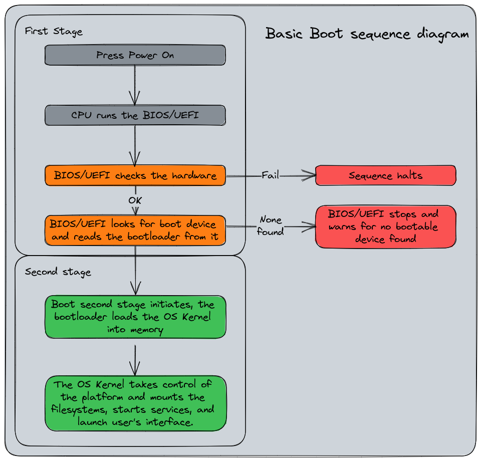
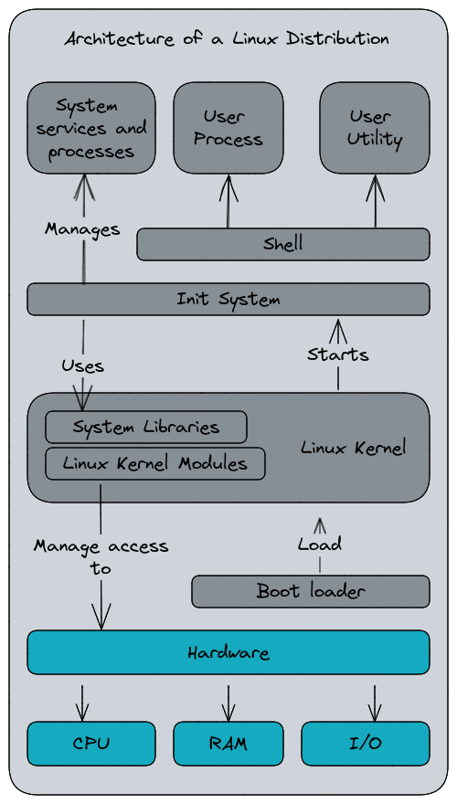

System administration with systemd
Giovanni Ciatto
References
What is systemd? (pt. 1)
systemd$\approx$ today’s most common init system for Linux systems
- but what’s an init system in the first place?
What happens when you boot a Linux system?
Overview

What happens when you boot a Linux system?
The role of the init system

The init system is the first process started by the kernel
(this is why it has PID=1)
Responsibilities
-
Starting all other processes (namely, the services):
- including the display server (e.g. X, Wayland)
- including the window manager (e.g. Gnome, KDE)
- including daemons and services (e.g.
sshd,httpd)
-
Mounting the file systems
- e.g. the home partition, the swap partition, etc.
-
Setting up the network
- e.g. starting the network manager, hence connecting to the default networks, etc.
-
Suspending/hibernating (and resuming), rebooting, and shutting down the system
What happens when you boot a Linux system?
Once the system is up and running…

The init system has:
- started all the system services
- mounted all the file systems
- set up the network
- started the display server
- started the window manager
- started the user session
Init systems
-
SysVinit (1980s—early 2000s) first family of init systems for Unix-like systems
-
Upstart (2006—2014) developed by Canonical for Ubuntu
-
runit (2004—present) used by niche Linux distributions
-
OpenRC (2007—present) used by Gentoo and Alpine Linux
-
launchd (2005—present) used by macOS, developed by Apple
-
systemd (2010—present) inspired by
launchd, used by most Linux distributions nowadays -
Comparison here: https://wiki.gentoo.org/wiki/Comparison_of_init_systems
What is systemd? (pt. 2)
systemd is a suite of system management daemons, libraries, and utilities designed as a central management and configuration platform for the Linux OS

systemd’s utilities suite
The systemd suite includes the following command-line utilities (corresponding to relevant daemon services):
-
systemctlcontrols thesystemddaemon, from which system- and user-level services can be managed -
journalctlqueries messages from thejournalddaemon, which collects and stores log messages from the kernel and services -
hostnamectlcontrols thehostnameddaemon, from which the name of the host on the network can be read/set -
loginctlcontrols theloginddaemon, which manages user sessions and seats -
timedatectlcontrols thetimedateddaemon, which manages the system clock and time zone -
localectlcontrols thelocaleddaemon, which manages the system locale and keyboard layout -
busctlcontrols thebus-proxyddaemon, which provides a D-Bus interface to the system bus -
networkctlcontrols thenetworkddaemon, which manages network configurations -
resolvectlcontrols theresolveddaemon, which manages DNS configurations
Remarks
This lecture is about the usage of systemd as the service manager for Linux
(i.e., put simply, how to usesystemctlandjournalctl)
-
… but the systemd suite is much more than that!
-
Overall, systemd is a set of tool for system administration
- you can control most aspects of a Linux system using systemd’s utilities
Beware!
-
systemd is a controversial piece of software inside the FOSS community
- it has been criticized because it arguably violates the Unix philosophy
- it has been criticized as a mission creep (i.e., it does too much) and as a feature creep (i.e., it has too many features)
- yet, it is the de facto standard for most (and most relevant) Linux distributions
-
Yet, do not expect all distros to implement/support all the features of the systemd suite
A taste of the systemd suite
before delving into the details of systemctl and journalctl
A taste of the systemd suite (pt. 1)
Hostname Management
- Get an overview with
hostnamectl --helphostnamectl [OPTIONS...] COMMAND ... Query or change system hostname. Commands: status Show current hostname settings hostname [NAME] Get/set system hostname icon-name [NAME] Get/set icon name for host chassis [NAME] Get/set chassis type for host deployment [NAME] Get/set deployment environment for host location [NAME] Get/set location for host
- See information about the current hostname with
hostnamectl statusStatic hostname: lubuntu2410-vm Icon name: computer-vm Chassis: vm 🖴 Machine ID: 7fc69dab56a64d73b4f2ae5077df58a0 Boot ID: 7b52bffe735b47a18135db49790a4cc9 Virtualization: oracle Operating System: Ubuntu 24.10 Kernel: Linux 6.11.0-9-generic Architecture: x86-64 Hardware Vendor: innotek GmbH Hardware Model: VirtualBox Firmware Version: VirtualBox Firmware Date: Fri 2006-12-01 Firmware Age: 17y 11month 1w 4d
- Update the system hostname with
hostnamectl hostname my-new-hostname
A taste of the systemd suite (pt. 2)
User Login and Session Management
- Get an overview with
loginctl --help(sub-commands are organized in Session, User, and Seat commands)loginctl [OPTIONS...] COMMAND ... Send control commands to or query the login manager. Session Commands: list-sessions List sessions session-status [ID...] Show session status show-session [ID...] Show properties of sessions or the manager activate [ID] Activate a session lock-session [ID...] Screen lock one or more sessions unlock-session [ID...] Screen unlock one or more sessions lock-sessions Screen lock all current sessions unlock-sessions Screen unlock all current sessions terminate-session ID... Terminate one or more sessions kill-session ID... Send signal to processes of a session User Commands: list-users List users user-status [USER...] Show user status show-user [USER...] Show properties of users or the manager enable-linger [USER...] Enable linger state of one or more users disable-linger [USER...] Disable linger state of one or more users terminate-user USER... Terminate all sessions of one or more users kill-user USER... Send signal to processes of a user Seat Commands: list-seats List seats seat-status [NAME...] Show seat status show-seat [NAME...] Show properties of seats or the manager attach NAME DEVICE... Attach one or more devices to a seat flush-devices Flush all device associations terminate-seat NAME... Terminate all sessions on one or more seats
A taste of the systemd suite (pt. 2)
User Login and Session Management
-
Get an overview of the current situation with
loginctl(no args):SESSION UID USER SEAT LEADER CLASS TTY IDLE SINCE 527 1000 user - 16410 manager - no - 529 1000 user seat0 16591 user tty2 no - 531 1000 user - 17051 user pts/1 no - -
A bit of nomenclature:
- Session: a login session (e.g., a TTY session, an SSH session)
- User: a user account (e.g.,
root,user) - Seat: a physical or virtual seat (e.g., a display, a keyboard, a mouse)
- Leader: the PID of the session leader (i.e., the process that started the session)
A taste of the systemd suite (pt. 3)
Time and Date Management
- Get an overview with
timedatectl --helptimedatectl [OPTIONS...] COMMAND ... Query or change system time and date settings. Commands: status Show current time settings set-time TIME Set system time set-timezone ZONE Set system time zone list-timezones Show known time zones set-local-rtc BOOL Control whether RTC is in local time set-ntp BOOL Control whether NTP is enabled timesync-status Show status of systemd-timesyncd show-timesync Show properties of systemd-timesyncd ntp-servers INTERFACE SERVER… Set the interface specific NTP servers revert INTERFACE Revert the interface specific NTP servers
-
See information about the current time (zone) with
timedatectl statusLocal time: lun 2024-11-11 10:56:28 CET Universal time: lun 2024-11-11 09:56:28 UTC RTC time: lun 2024-11-11 09:56:27 Time zone: Europe/Rome (CET, +0100) System clock synchronized: yes NTP service: active RTC in local TZ: no -
Show time-sync status with
timedatectl timesync-statusServer: 185.125.190.57 (ntp.ubuntu.com) Poll interval: 34min 8s (min: 32s; max 34min 8s) Leap: normal Version: 4 Stratum: 2 Reference: 11FD1CFB Precision: 1us (-25) Root distance: 846us (max: 5s) Offset: +4.710ms Delay: 36.168ms Jitter: 1.689122s Packet count: 130 Frequency: -53,092ppm
A taste of the systemd suite (pt. 4)
Locale Management
Locale $\approx$ a set of cultural conventions that determine how dates, times, numbers, and currency are formatted. Keyboard layouts are locale-specific too.
- Get an overview with
localectl --helplocalectl [OPTIONS...] COMMAND ... Query or change system locale and keyboard settings. Commands: status Show current locale settings set-locale LOCALE... Set system locale list-locales Show known locales set-keymap MAP [MAP] Set console and X11 keyboard mappings list-keymaps Show known virtual console keyboard mappings set-x11-keymap LAYOUT [MODEL [VARIANT [OPTIONS]]] Set X11 and console keyboard mappings list-x11-keymap-models Show known X11 keyboard mapping models list-x11-keymap-layouts Show known X11 keyboard mapping layouts list-x11-keymap-variants [LAYOUT] Show known X11 keyboard mapping variants list-x11-keymap-options Show known X11 keyboard mapping options
- See information about the current locale with
localectl statusSystem Locale: LANG=it_IT.UTF-8 VC Keymap: (unset) X11 Layout: it X11 Model: pc105
A taste of the systemd suite (pt. 5)
Network Management
- Get an overview with
networkctl --helpnetworkctl [OPTIONS...] COMMAND Query and control the networking subsystem. Commands: list [PATTERN...] List links status [PATTERN...] Show link status lldp [PATTERN...] Show LLDP neighbors label Show current address label entries in the kernel delete DEVICES... Delete virtual netdevs up DEVICES... Bring devices up down DEVICES... Bring devices down renew DEVICES... Renew dynamic configurations forcerenew DEVICES... Trigger DHCP reconfiguration of all connected clients reconfigure DEVICES... Reconfigure interfaces reload Reload .network and .netdev files edit FILES|DEVICES... Edit network configuration files cat [FILES|DEVICES...] Show network configuration files mask FILES... Mask network configuration files unmask FILES... Unmask network configuration files persistent-storage BOOL Notify systemd-networkd if persistent storage is ready
-
Get the available connections with
networkctl listsystemd-networkd is not running, output might be incomplete. IDX LINK TYPE OPERATIONAL SETUP 1 lo loopback - unmanaged 2 enp0s3 ether - unmanagedunmanaged$\approx$ the network is not managed bynetworkd- the warning means that the
networkdis not running- Ubuntu-based systems use
NetworkManagerinstead- to be controlled via the
nmclicommand
- to be controlled via the
- Ubuntu-based systems use
-
Get the status of a specific connection with
networkctl status LINK -
Use
networkctl up/down LINKto affect the connection- which implies connecting (up) or disconnecting (down)
A taste of the systemd suite (pt. 6)
DNS Management
- Get an overview with
resolvectl --helpresolvectl [OPTIONS...] COMMAND ... Send control commands to the network name resolution manager, or resolve domain names, IPv4 and IPv6 addresses, DNS records, and services. Commands: query HOSTNAME|ADDRESS... Resolve domain names, IPv4 and IPv6 addresses service [[NAME] TYPE] DOMAIN Resolve service (SRV) openpgp EMAIL@DOMAIN... Query OpenPGP public key tlsa DOMAIN[:PORT]... Query TLS public key status [LINK...] Show link and server status statistics Show resolver statistics reset-statistics Reset resolver statistics flush-caches Flush all local DNS caches reset-server-features Forget learnt DNS server feature levels monitor Monitor DNS queries show-cache Show cache contents show-server-state Show servers state dns [LINK [SERVER...]] Get/set per-interface DNS server address domain [LINK [DOMAIN...]] Get/set per-interface search domain default-route [LINK [BOOL]] Get/set per-interface default route flag llmnr [LINK [MODE]] Get/set per-interface LLMNR mode mdns [LINK [MODE]] Get/set per-interface MulticastDNS mode dnsovertls [LINK [MODE]] Get/set per-interface DNS-over-TLS mode dnssec [LINK [MODE]] Get/set per-interface DNSSEC mode nta [LINK [DOMAIN...]] Get/set per-interface DNSSEC NTA revert LINK Revert per-interface configuration log-level [LEVEL] Get/set logging threshold for systemd-resolved
-
Get the IP corresponding to some domain with
resolvectl query DOMAIN$ resolvectl query www.google.it www.google.it: 142.251.209.35 -- link: enp0s3 2a00:1450:4002:411::2003 -- link: enp0s3 -- Information acquired via protocol DNS in 74.5ms. -- Data is authenticated: no; Data was acquired via local or encrypted transport: no -- Data from: network -
Get which protocols are being used with
resolvectl statusGlobal Protocols: -LLMNR -mDNS -DNSOverTLS DNSSEC=no/unsupported resolv.conf mode: stub Link 2 (enp0s3) Current Scopes: DNS Protocols: +DefaultRoute -LLMNR -mDNS -DNSOverTLS DNSSEC=no/unsupported Current DNS Server: 10.0.2.3 DNS Servers: 10.0.2.3 -
Show DNS caches with
sudo resolvectl show-cacheScope protocol=dns ifindex=2 ifname=enp0s3 www.google.it IN A 142.251.209.35 www.google.it IN AAAA 2a00:1450:4002:411::2003
Examples
- Timer: duckdns
- SSHD service
- DockerD service